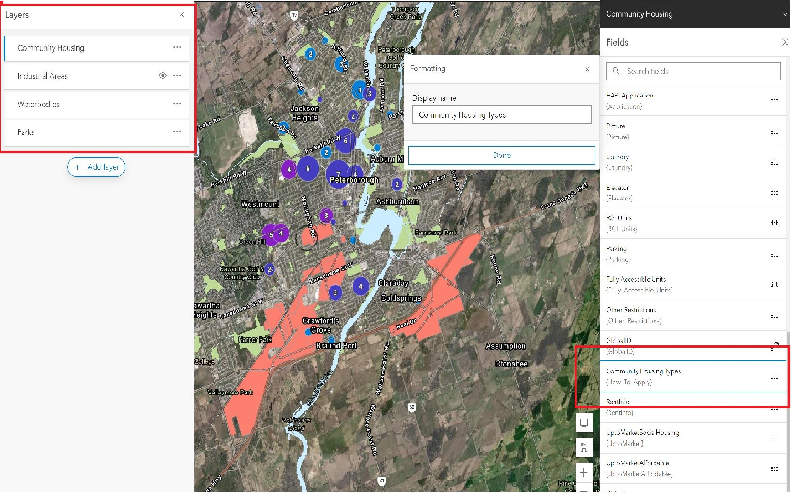
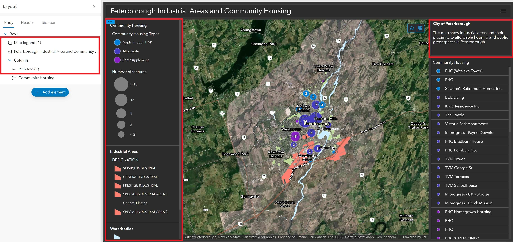
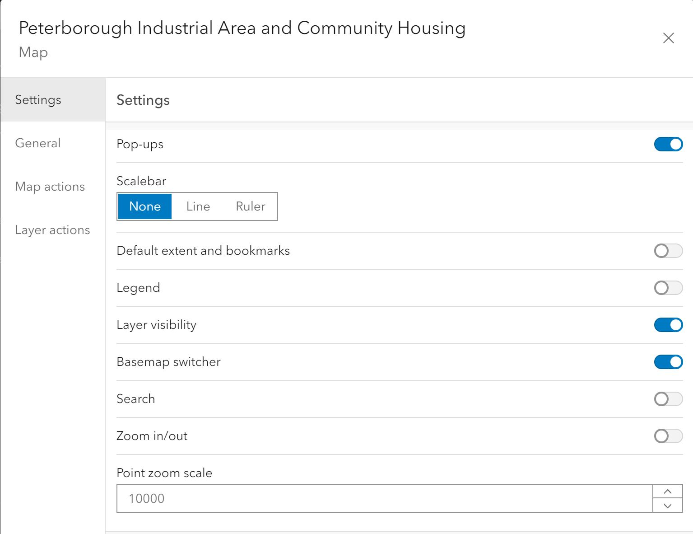
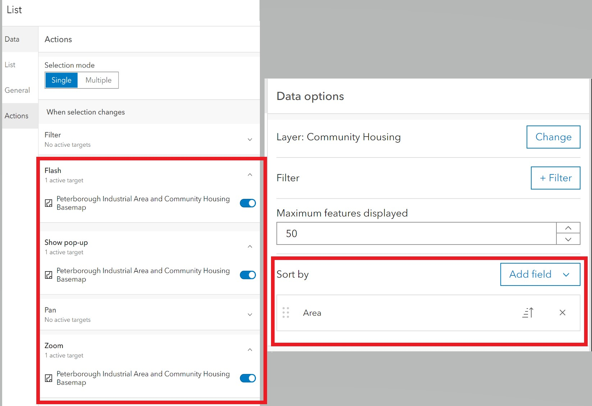
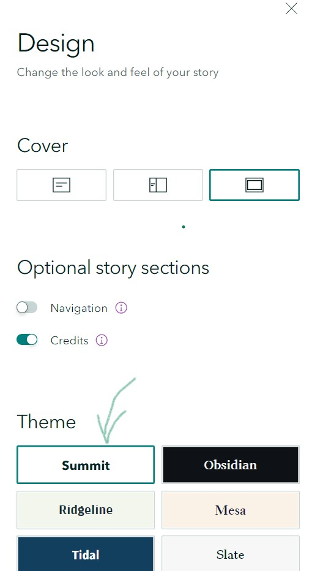
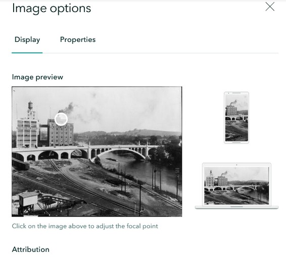
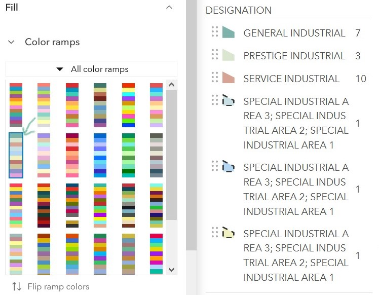
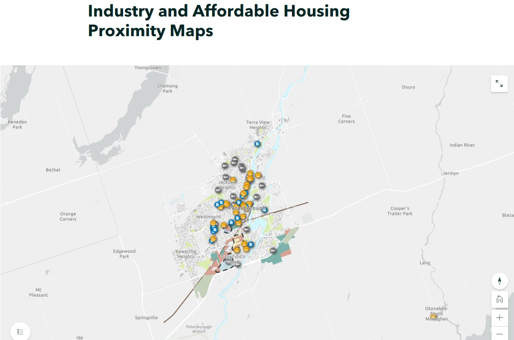
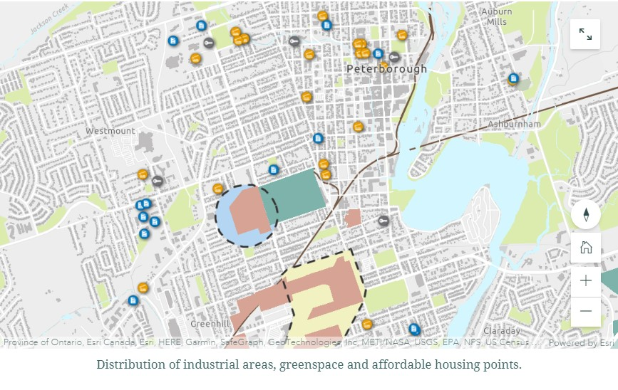
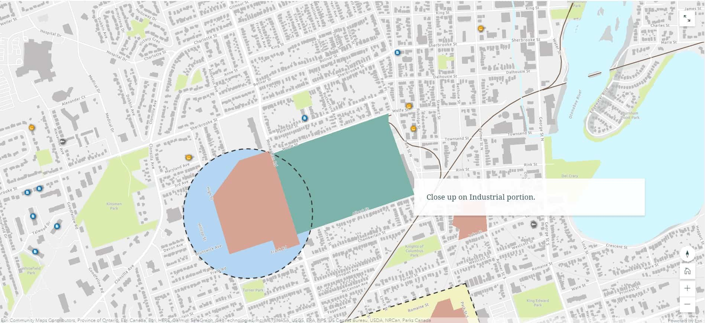

Mapping Injustice in Peterborough
Web Solution Process Guide: A Tale of Three Web Maps
Introduction
The Tenants’ Act team was formed for our upcoming collaborative project focusing on environmental injustice in Peterborough County, which will begin in May 2022. As we were so excited about getting to delve deeper into this subject matter, we decided to look at a similar topic for our GEOM99 project. We wanted to keep our focus on the relationships between industrial zones and community spaces-- in particular, those that are generally occupied by low-income households. This potential correlation is something we will get to explore more thoroughly in the coming weeks as part of our Collaborative Project.
Our Ideal
Peterborough residents and organizations can visit a website that displays three different ways to map areas with a high risk of environmental harm. Each embedded map shows the main areas of harm such as the old GE building, and old industrial buildings with lasting effects on the land.
Our Reality
There is no easy to digest web map that shows residents of Peterborough the reality of their proximity to neighbourhood pollutants.
Our Consequences
Residents and policy makers do not know the extent of local pollution and potential health consequences.
Our Proposal
We will explore and develop a web product using either AGOL Experience Builder, StoryMaps, or Dashboard and will display it in a map embedded on a webpage. The map will display areas with high levels of pollution.
The Journey
ArcGIS Online Dashboards
Using feature layers found on ArcGIS Online a web map was created to show community housing, greenspace and industrial areas in Peterborough. Layer and Display names were then changed to be more appropriate. Clustering was also enabled in the Community Housing Layer to group features together when zoomed out.
On the newly created Peterborough Industrial area and Community Housing web map item page on AGOL a Dashboard Web app was chosen to create a new dashboard. In the layout tab map legend and rich text body elements were selected to add into the dashboard and a Dark Layout Theme was chosen. Initially the map legend option within the map settings was chosen which enabled a legend button on the map, however it made more sense to have a permanent legend which didn't obscure the map.
Within the map settings layer visibility, basemap switcher and Pop-ups were enabled. The layer visibility and basemap switcher options added buttons that provided the option to toggle different layers on/off and the switching of basemap types. The pop-up setting enabled the ability to click on features and have a table with the features attributes pop up.
A list body element was used to create a list of Community Housing. The list was then sorted by the area field and the flash, show pop up and zoom options were enabled. When a item is selected in the list, a pop up table of the community housing features attribute table will appear and the feature will flash and zoom to its location on the map. Default extent and bookmarks was also enabled to allow the user to click a button to return to the original map extent.
Below is a screenshot of the final product. Click on the image to go to a working version of the dashboard.
Out of the 3 options explored the Dashboard proved the most limited in it's ability to effectively tell the sort of detailed story that we were aiming for. It would be better suited to communicate information in a quick and simple manner. We also discovered that without heavy editing in the web map the dashboard was limited ability display information in a meaningful way. The other element items, such as the pie chart, indicator, gauge, and serial chart items, they were deemed not appropriate as we lacked the quantitative data necessary for these to be of use.
ArcGIS Online Experience Builder
A web map was first created to form the main section of the Experience Builder design. This map included layers showing some industrial areas in the city, as well as a community housing layer and greenspace.

The layout was decided after playing with the available widgets offered by Experience Builder. Initially, the List widget was being used to talk about relevant locations in the area, but ultimately the Bookmarks widget was more useful, as it could act like a tour around the relevant locations.

The Feature Info widget was used to show attributes of the community housing layer when clicked, and the map pop-up on click was removed. The first Image below is when what the empty box looks like (left) versus when an item is selected on the map (right).

Options to toggle on the legend and map layers were added using widgets in the header, as well as a search function, measurement tool, and a find location tool.

The last step of the layout was to determine how it changes when resized. Experience Builder offers many options for screen size, which can be redesigned for each major size group (like small, medium, large). For different size ratios within these broad categories, any layout adjustment made would apply to all of them, so some of the smallest size option have odd looking layouts still. To compensate for text overlapping among different sizes (image below), the subheading was hidden for medium screens (left), and both the title and the subheading were hidden from small screens (right).

The best version of the layout is the large screen layout (below).

While Experience Builder provides useful options, ultimately with the story we want to tell with the data, something that offers more of a text-based tour through the data would be more useful. The Bookmarks widget provides some capability for this, but the StoryMap service is undoubtedly a better strategy for this type of project.
ArcGIS StoryMaps
Prior to creating a web map, a new story was launched in the ArcGIS StoryMap application in order to build a structural skeleton before populating it with content. Using the design menu, a full cover style was selected as well as the Summit theme.
Theme Selection:
After the design style was determined, imagery of Peterborough was imported for use as the cover photo. Initially we considered linking to an image, however within StoryMaps, the cover photo must be uploaded and url links only work in other sections of the story. It's an oddly specific quirk, but not too arduous to work around. One of the highlights of StoryMaps is the ease of working with the story layout options and the fact that these options are mostly intuitive. The UX is mostly a treat to use. When inserting the Peterborough cover photo we could immediately see how it would look on different displays in real time.
Cover photo display options:
Final Cover Photo- 'Full' Layout
Another functionality that takes guesswork out of image is the way in which StoryMaps only allows the user to select sizes that won’t distort the image i.e. you can only select the large option if your image is at least 1920 px wide. At this point, a Peterborough web map was created back in ArcGIS online using layers acquired in AGOL including greenspace, industrial areas, community housing points, roads, rail and local hydrology. At this stage of data we simply wanted to experiment with industrial / rail proximity to affordable housing. Symbology was developed and a color ramp of Chamois selected for the Industrial layer.
We learned that while you can adjust the map appearance within StoryMaps- any changes you make will only affect the map in that particular story - which has a use case, but in the end we decided to do all of our map styling within the web map item itself in order to maintain consistency if it is imported into another story. After putting together the web map, we returned to StoryMaps to flesh out the layout and import additional visuals. An unexpected pitfall of StoryMaps is that its simplicity means you can end up overcomplicating the process for yourself and it's easy to accidentally hit the plus sign option expecting an edit menu to pop up when it's just a place to insert more content.

Through the exploration process we realized that when you change the symbology of your map back in map viewer, it doesn't update the map in the story automatically- you have to select “publish” in order to see your most recent visual treatment. Thankfully it retains the original zoom level from the previous iteration- a definite pro if you spent time honing the exact extent you want to show in the story. An additional challenge is that occasionally the web map stalls a few seconds and doesn't immediately load. This can be remedied by reducing the number of layers, using an express map to display the data or refreshing the page.
Ultimately we have selected StoryMaps as our preferred solution because of its simplicity, ease of use and relative expediency for what it delivers. Not only does it play well with other ArcGIS web functionalities, it creates an aesthetically pleasing end product. We set out to create a web map that was digestible for the public and policy makers on proximity to neighbourhood pollution. Essentially StoryMaps creates a website type container to display our content without the need to wrestle with backend layout code.
With the ability to seamlessly incorporate an interactive scrolling map- the user can be directed to the geographical areas we want to highlight in sequence using Sidecar. The scrolling effect adds a dynamic quality to the user experience and helps the flow of our story.
Start with full map extent:
Scroll to closer look:
Sidecar functionality:

Scroll to another viewing area via Sidecar:
 Next
{kind=link}
{kind=link}
{kind=link}